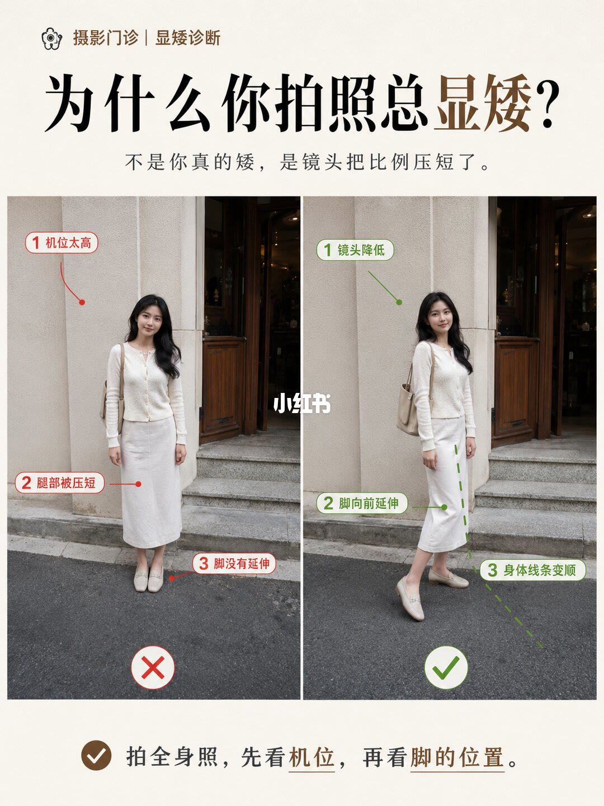
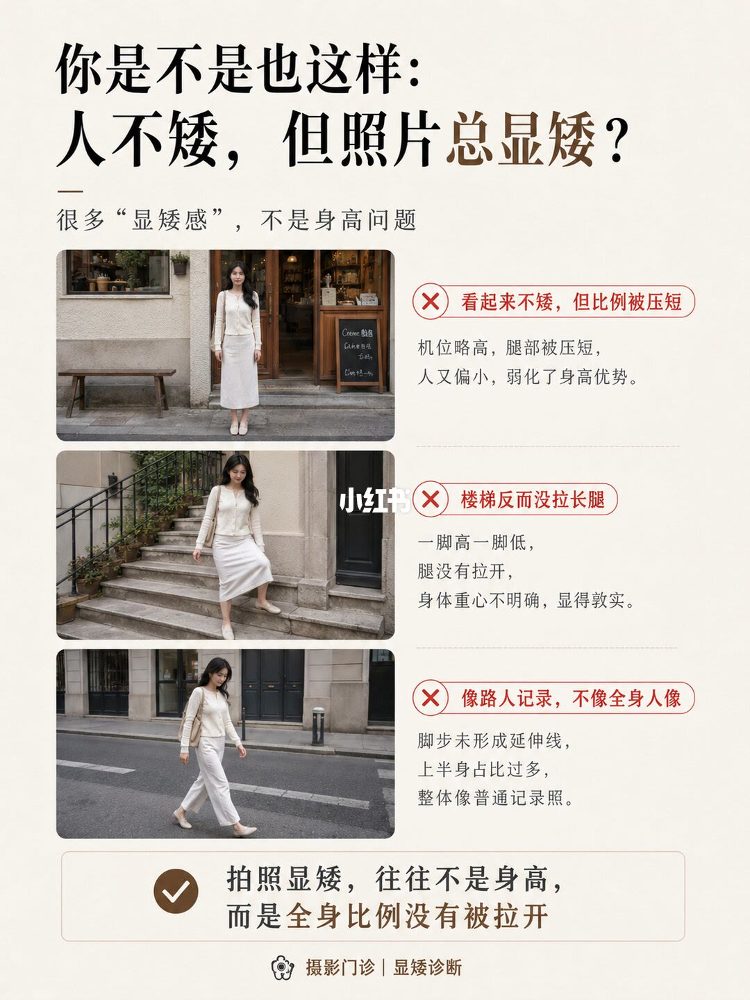
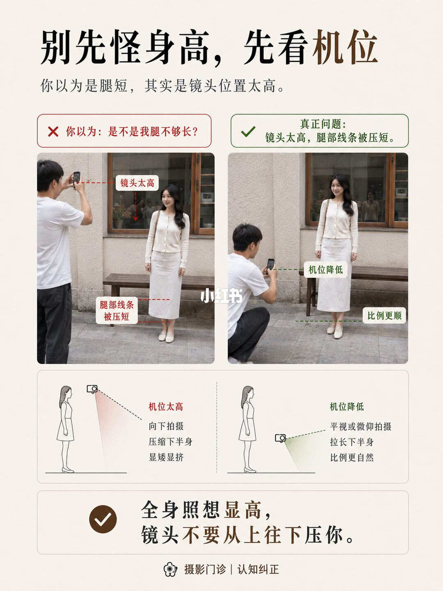
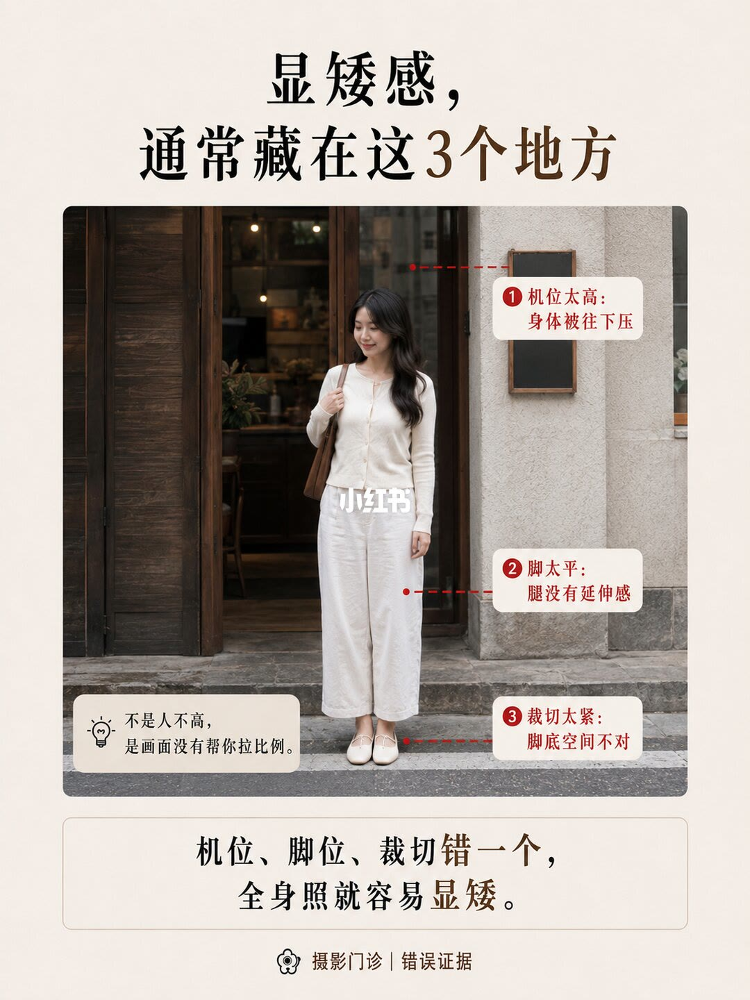
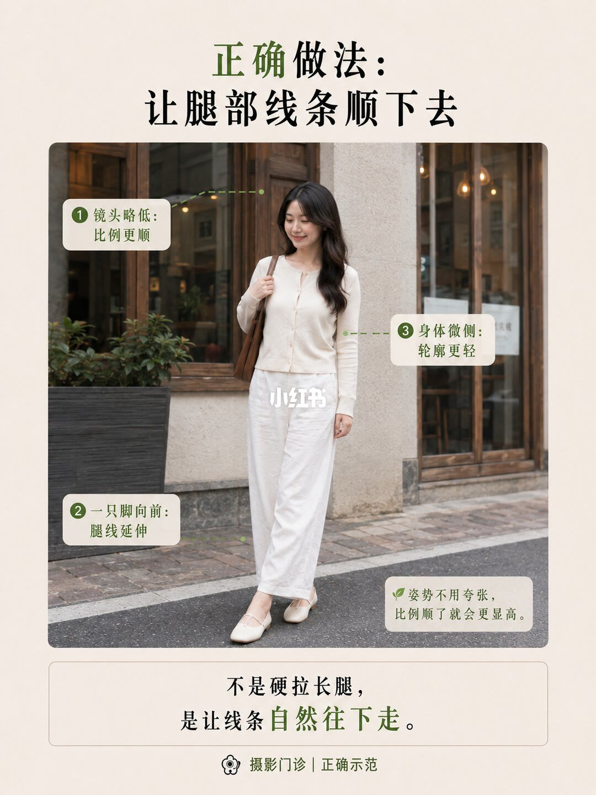
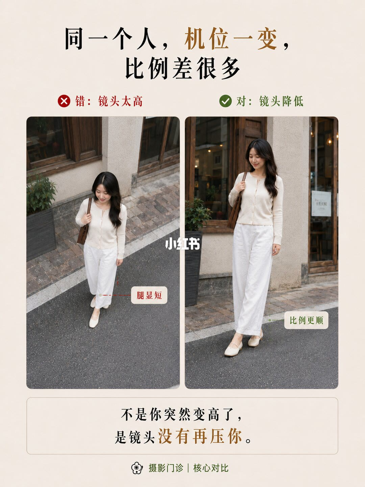
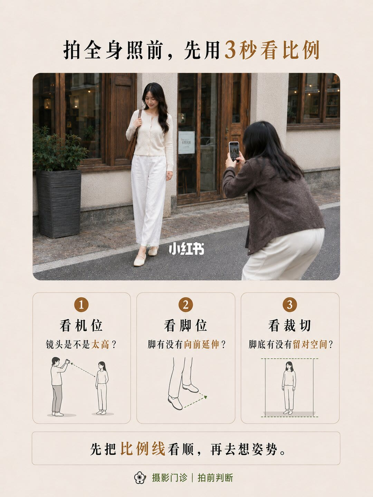
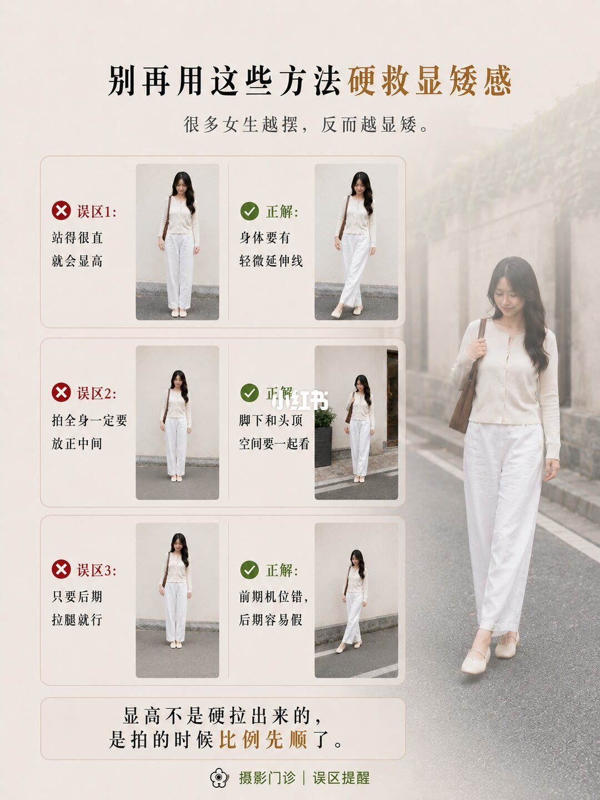
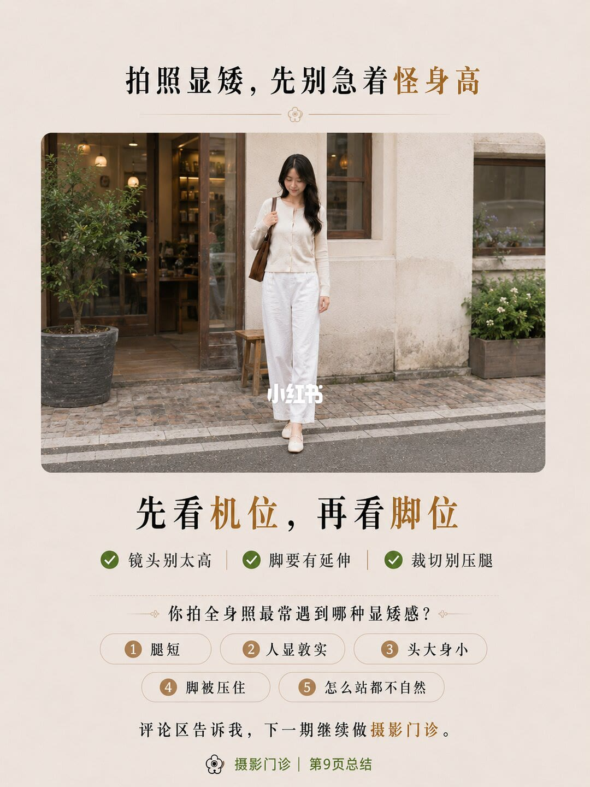

图文实录 · 小红书 · 爱拍照的七十(努力涨粉中)
本人不矮，为什么照片里像矮了一截？
标题要回答的是：人并不矮，全身照为什么像矮了一截。九页把原因收在机位、脚位和裁切上：镜头从上往下压，腿线被压短；脚不向前，腿没有延伸；脚底裁得太紧，人像被卡在画面里。显高靠的是镜头低一点、脚往前一点、线条顺一点，不是先怪身高，也不是站得很直或后期硬拉腿。
1/9
为什么你拍照总显矮
页眉是「摄影门诊｜显矮诊断」。大标题「为什么你拍照总显矮？」，副题「不是你真的矮，是镜头把比例压短了。」左右各一张全身照。左图能确认的标注是「1 机位太高」和「3 脚没有延伸」；指向腿部的第 2 点整句无法确认。右图三点是「1 镜头降低」「2 脚向前延伸」「3 身体线条变顺」。页底一句：「拍全身照，先看机位，再看脚的位置。」

2/9
人不矮，照片仍显矮
标题是「你是不是也这样：人不矮，但照片总显矮？」副题「很多“显矮感”，不是身高问题」。三张都打了叉。第一张：「看起来不矮，但比例被压短。机位略高，腿部被压短，人又偏小，弱化了身高优势。」第二张：「楼梯反而没拉长腿。一脚高一脚低，腿没有拉开，身体重心不明确，显得敦实。」第三张：「像路人记录，不像全身人像。脚步未形成延伸线，上半身占比过多，整体像普通记录照。」收束句：「拍照显矮，往往不是身高，而是全身比例没有被拉开。」页脚仍是「摄影门诊｜显矮诊断」。

3/9
别先怪身高，先看机位
标题「别先怪身高，先看机位」。副题「你以为是腿短，其实是镜头位置太高。」左图说明：「你以为：是不是我腿不够长？」标注「镜头太高」「腿部线条被压短」。右图说明写的是真正问题：「镜头太高，腿部线条被压短。」画面上的对照标注是「机位降低」「比例更顺」。下面两张侧视示意图：左边「机位太高 / 向下拍摄 / 压缩下半身 / 显矮显挤」；右边「机位降低 / 平视或微仰拍摄 / 拉长下半身 / 比例更自然」。页底：「全身照想显高，镜头不要从上往下压你。」页脚「摄影门诊｜认知纠正」。机位低到哪一厘米、仰角多少，图上没有数字。

4/9
显矮感藏在三处
标题「显矮感，通常藏在这3个地方」。同一张全身照标了三点：「① 机位太高：身体被往下压」「② 脚太平：腿没有延伸感」「③ 裁切太紧：脚底空间不对」。图内提示：「不是人不高，是画面没有帮你拉比例。」底栏：「机位、脚位、裁切错一个，全身照就容易显矮。」页脚「摄影门诊｜错误证据」。三处是并列条件，页上没有写哪一处权重更大。

5/9
让腿部线条顺下去
页首「正确做法：让腿部线条顺下去」。三点：「镜头略低：比例更顺」「一只脚向前：腿线延伸」「身体微侧：轮廓更轻」。旁注：「姿势不用夸张，比例顺了就会更显高。」底句：「不是硬拉长腿，是让线条自然往下走。」页脚「摄影门诊｜正确示范」。这一页对上第 4 页的前两项，裁切空间留到第 7 页再单独问。

6/9
同一个人，机位一变
标题「同一个人，机位一变，比例差很多」。左栏「错：镜头太高」，标注「腿显短」。右栏「对：镜头降低」，标注「比例更顺」。底句：「不是你突然变高了，是镜头没有再压你。」页脚「摄影门诊｜核心对比」。这一页明确写了同一个人。脚有没有同时换位置，画面上无法确认，文案只比较机位。

7/9
拍之前用三秒看比例
标题「拍全身照前，先用3秒看比例」。三问配简图：「1 看机位：镜头是不是太高？」「2 看脚位：脚有没有向前延伸？」「3 看裁切：脚底有没有留对空间？」底句：「先把比例线看顺，再去想姿势。」页脚「摄影门诊｜拍前判断」。三秒是口令，不是测量时长。脚底留多少空间，图上没有尺寸。

8/9
别用这三招硬救
标题「别再用这些方法硬救显矮感」。副题「很多女生越摆，反而越显矮。」三组对照。误区 1「站得很直就会显高」，正解「身体要有轻微延伸线」。误区 2「拍全身一定要放正中间」，对照文案是「脚下和头顶空间要一起看」。误区 3「只要后期拉腿就行」，正解「前期机位错，后期容易假」。底句：「显高不是硬拉出来的，是拍的时候比例先顺了。」页脚「摄影门诊｜误区提醒」。后期用什么工具、拉多少，图上没有。

9/9
先别急着怪身高
标题「拍照显矮，先别急着怪身高」。中间一句「先看机位，再看脚位」。三条：「镜头别太高」「脚要有延伸」「裁切别压腿」。下面是提问：「你拍全身照最常遇到哪种显矮感？」选项是「1 腿短」「2 人显敦实」「3 头大身小」「4 脚被压住」「5 怎么站都不自然」。页底：「评论区告诉我，下一期继续做摄影门诊。」页脚「摄影门诊｜第9页总结」。这五个选项是提问，不是这一套图已经测出的结果。

收尾
镜头低一点，脚往前一点
结论：照片里像矮了一截，九页写的原因是全身比例被压短，不是先认定身高不够。机位太高会向下压、腿显短；脚太平或脚步不延伸，腿线断掉；脚底裁切太紧会压腿。可做的是镜头略低、一只脚向前、身体微侧，并让头顶和脚底空间一起成立。比例顺了再想姿势。站得很直、必须放正中间、后期拉腿，被写成越救越显矮或容易假。
支撑页：封面对照在 1/9，三种现场在 2/9，机位高低的实拍和示意图在 3/9，三处错误证据在 4/9，正确示范在 5/9，同一人只动机位的对照在 6/9，拍前三问在 7/9，三条误区在 8/9，三条收束和五种提问在 9/9。
边界：九页没有机位厘米数、仰角度数、脚底留白尺寸、焦距和机型。只有 6/9 写明「同一个人」；其余页是否同一人、脚位是否同时改了，无法确认。1/9 左图指向腿部的第 2 点整句无法确认。后期拉腿的步骤不在图里。9/9 的五种显矮感是让人选择的问题，不是诊断结论。楼梯、路人记录只作为反例出现，没有给出对应的改拍步骤。